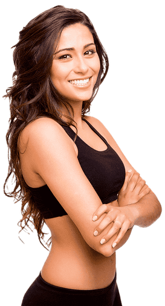
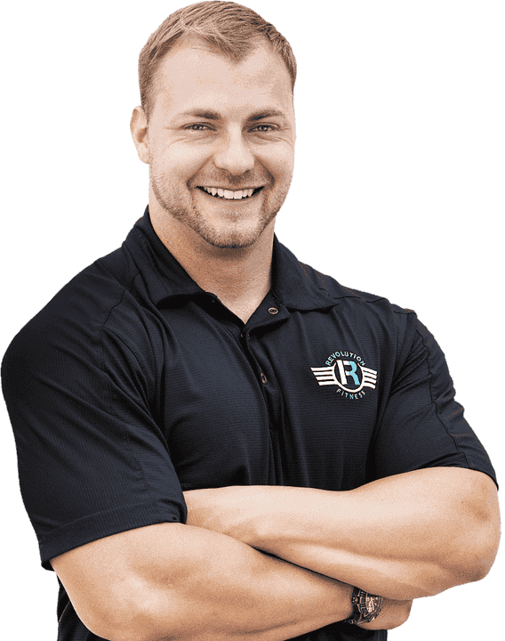
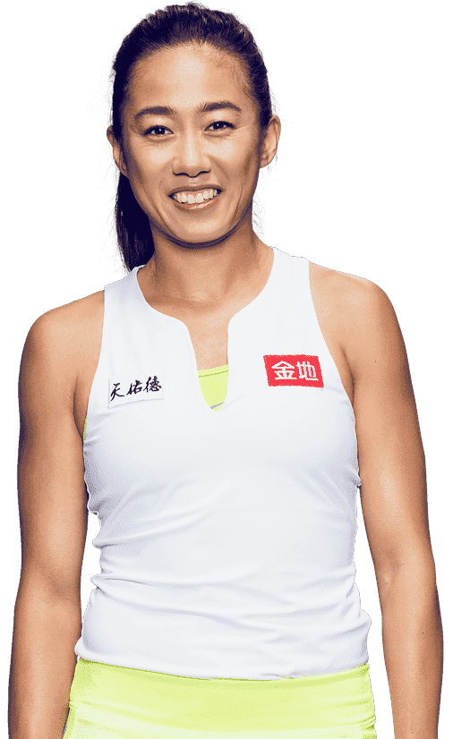
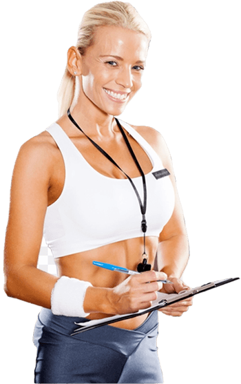
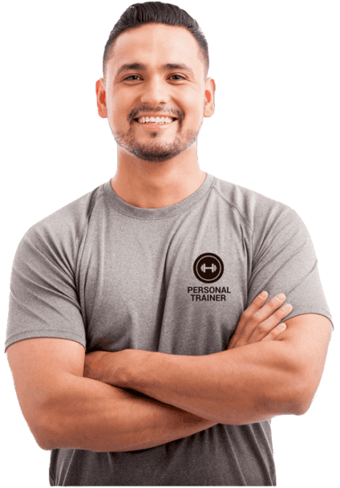

Personal trainer
Quà a Bora Bora Fitness Club puoi allenarti al meglio con il supporto dei
nostri personal trainer!
Fabio Villotti, 35 anni
"L'importante non è solo quello che trovi alla fine della nostra corsa, ma anche quello che
provi mentre stai correndo"
Possiedo un diploma da Personal Trainer
ISSA e certificazioni
ELAV, Taping
Neuromuscolare, TRX e
Kettlebell. So fare massaggi drenanti, muscolari e distensivi. Ho esperienza come
istruttore di sala pesi, corsi musicali, attività motorie e scuola calcio. Sono appassionato di
culturismo e ho particolare esperienza con la preparazione prima della gara in questo settore.
Svolgo il ruolo sia di personal trainer che di group trainer
: le mie lezioni unite alla supervisione individuale possono aiutarti a migliorare verso i
tuoi obiettivi! Insieme possiamo raggiungere grandi risultati in dimagrimento, divertimento, massa
e tonificazione.
Segui i miei corsi
- Boxe
- Calisthenics
- Cross Active Induction
- HIIT
Preparati con me in
- Preparazione atletica
- Forza e resistenza
- Ipertrofia
- Dimagrimento e tonificazione
- Divertimento
Adriana Lima, 25 anni

"Conta i fiori del tuo giardino, non preoccuparti mai delle foglie che cadono a terra"
Possiedo una laurea in Scienze Motorie e sono laureanda in Nutrizione Umana. Ho anche una
certificazione Cronomorfodieta e ho frequentato corsi come Antiaging Academy
AFFWA e
SFSM Certified
Disability. Ho esperienza come preparatore atletica, mental coach, bikini
bodybuilder, postural trainer. Sono appassionata di impostazione posturale e allenamento
al femminile, campi in cui ho già passate esperienze. Svolgo il ruolo di personal
trainer ma principalmente di group trainer: puoi quindi seguire i
miei numerosi corsi, divertenti e produttivi e se hai bisogno di ulteriore assistenza, puoi
contare sul mio aiuto! Insieme possiamo raggiungere grandi risultati in equilibrio, forza,
resistenza, riabilitazione, tonificazione.
Segui i miei corsi
- Canoe polinesiane va'a
- Cycle Burn
- Aero Dance
- Zumba
- Nuoto Sincronizzato
- Aero Pilates
- Dynamic Dancing
Preparati con me in
- Impostazione posturale
- Crossfit
- Allenamento femminile
- Bodybuilding
- Dieta chetogenica
Chris Edwards, 37 anni

"Lo scopo della vita è lo sviluppo di noi stessi, la perfetta realizzazione della nostra
natura: è per questo che noi esistiamo"
Sono un biologo nutrizionista e faccio parte dell'Ordine Nazionale dei Biologi. Ho una laurea in
Scienze Nutrizione Umana e una in Scienze Motoria. Inoltre possiedo un diploma come
Massoterapista, di cui ho anche esperienza. Ho esperienza anche come massaggiatore e terapista
sportivo, e nutrizionista (dietologo per atleti di tennis e calcio). Ho anche un centro studio
medico. Sono appassionato di quello che riguarda la massa muscolare e la forza fisica, campi in
cui mi alleno anch'io. Svolgo il ruolo di personal trainer che di
group trainer: puoi quindi seguire i miei numerosi corsi, divertenti e
produttivi e se hai bisogno di ulteriore assistenza, puoi contare sul mio aiuto! Insieme possiamo
raggiungere grandi risultati in dimagrimento, riabilitazione, tonificazione.
Segui i miei corsi
- Performace Long Run
- Camminata
- Performance Speed Run
- Abdominal
- Arms Muscle
- Back Muscle
Preparati con me in
- Dieta mediterranea
- Miglioramento delle prestazioni
- Benessere psicologico e fisico
- Gravidanza
- Recupero funzionale
Fen Wang Li, 34 anni

"Il corpo raggiunge ciò che la mente desidera. Adatta la mente e il corpo seguirà"
Ho diplomi in Les Milles Body Pump, Virgin Postural Fusion,
Gravity Foundation e Acqua Virgin. Possiedo anche certificazioni
come Fitbox, Crosscardio, Pump, Black Level Cycling. Sono stato istruttore
di Active Pump, Fitness, Indoor Cycling e corsi in acqua. Sono appassionata
di praticamente tutto quello che riguarda l'attività fisica, pertanto mi piace studiare ogni
argomento a riguardo: sono quindi pronta a darti informazioni, consigli e a seguirti su ogni campo
interessato. Sono anche appassionata di nuoto e ho particolare esperienza con la preparazione
prima della gara in questo settore. Svolgo il ruolo sia di personal trainer
che di group trainer: le mie lezioni unite alla supervisione individuale
possono aiutarti a migliorare verso i tuoi obiettivi! Insieme possiamo raggiungere grandi
risultati in dimagrimento, donna, salute, tonificazione.
Segui i miei corsi
- Low Body
- Full Body
- Active Jump
- Upper Body
Preparati con me in
- Ricomposizione corporea
- Riabilitazione infortuni
- Ginnastica terza età
- Cardiovascolare
- Nuoto
Costas Garcia, 46 anni
"Qualunque cosa tu possa fare o sognare di fare, devi solo incominciarla! L'audacia ha
in sé potere e magia"
Ho un diploma Les Milles e certificazioni ELAV, in Taping Neuromuscolare,
TRX e Kettlebell. Ho
esperienza come istruttore a domicilio e per anni ho accompagnato attori famosi nel raggiungimento
della loro forma ideale per film. Sono appassionato di praticamente tutto quello che riguarda
l'attività fisica, pertanto mi piace studiare ogni argomento a riguardo: sono
quindi pronto a darti informazioni, consigli e a seguirti su ogni campo interessato. Sono anche
appassionato di meditazione, rilassamento e pilates, e ho particolare esperienza con la
preparazione pre gara in questo settore. Svolgo il ruolo sia di personal trainer
che di group trainer: le mie lezioni unite alla supervisione
individuale possono aiutarti a migliorare verso i tuoi obiettivi! Insieme possiamo raggiungere
grandi risultati in concentrazione, funzionale, rilassamento, resistenza.
Segui i miei corsi
- Pilates
- Power Yoga
- Aerogym
- Leg Flexability
Preparati con me in
- Forza e resistenza
- Ipertrofia
- Divertimento
- Crossfit
- Bodybuilding
Anastasia Smirnova, 33 anni

"No pain, no gain! Il duro lavoro batte il talento, se il talento non
lavora duro!"
Ho una laurea triennale in Scienze Motorie. Faccio l'attività di istruttore da giovane età in quanto
sono sempre stata appassionata di nuoto, pallavolo e competizioni in acqua. Ho esperienza come
assistente in sala e nei. Sono anche esperta di dieta e dimagrimento. Ho buone conoscenze anche di
forza e resistenza. Sono appassionata di impostazione posturale e allenamento al femminile, campi
in cui ho già passate esperienze. Svolgo il ruolo di personal trainer ma
principalmente di group trainer: puoi quindi seguire i miei numerosi corsi,
divertenti e produttivi e se hai bisogno di ulteriore assistenza, puoi contare sul mio aiuto!
Insieme possiamo grandi risultati in adrenalina, coordinazione, forza, funzionale, tonificazione.
Segui i miei corsi
- Water Endurance
- Water Hydrobike
- Water Tone
- Water Reaxraft
- Meditation
- Postural Training
Preparati con me in
- Forza e resistenza
- Dimagrimento e tonificazione
- Allenamento posturale
- Allenamento femminile
- Dieta chetogenica
Gustavo Perez, 31 anni

"Oggi prendi una decisione che hai sempre rimandato, e domani fai la stessa cosa. Allenerai
il muscolo che potrà aiutarti a cambiare la tua mente"
Ho una laurea triennale in Scienze Motorie, certificazione Personal Trainer
presso ELAV. Ho anche buone
conoscenze di analisi e riequilibrio posturale. Sono stato istruttore di sala per 13 anni, sono
pertanto esperto di allenamenti funzionali e metabolici. Mi impegno affinché ci sia
benessere psicologico e fisico in modo da raggiungere la terza età in buona forma. Sono
appassionato di attività fisica orientata al benessere e divertimento fisico ed emotivo:
posso quindi aiutarti a stare meglio. Svolgo il ruolo di personal trainer
ma principalmente di group trainer: puoi quindi seguire i miei
numerosi corsi, divertenti e produttivi e se hai bisogno di ulteriore assistenza, puoi contare
sul mio aiuto! Insieme possiamo raggiungere grandi risultati in dimagrimento, forza, massa,
resistenza, tonificazione.
Segui i miei corsi
- Flexability
- Gravity Pilates
- Mat Pilates
- Postural Recomposition
- Child Fun Activity
- Psyco Wellness
- Wellness Coaching
Preparati con me in
- Dieta mediterranea
- Benessere psicologico e fisico
- Recupero funzionale
- Riabilitazione infortuni
- Ginnastica terza età